Star Schema Data Warehouse for Market Indicators: S&P 500, GDP, CPI, and Housing Trends
This project involves designing and implementing a star schema-based data warehouse that integrates historical data from 1974 to 2013, including the S&P 500 index, GDP, CPI, unemployment rates, and housing prices. The centralized JULIAN_DAYS time dimension harmonizes data across daily, monthly, and quarterly levels, facilitating efficient OLAP operations such as slicing, dicing, drill-downs, and roll-ups. Advanced SQL queries enable analysis of market volatility, day-of-week trading patterns, and seasonal housing market trends, revealing significant correlations—for instance, between the S&P 500 and GDP (0.923), and the S&P 500 and housing prices (0.901). Visualizations further elucidate these relationships, providing actionable insights into economic indicator interactions.

Project Overview
This project implements a comprehensive data warehouse solution to analyze the relationships between major economic indicators and market performance. Through dimensional modeling and advanced analytics, we explore the intricate connections between GDP, S&P 500, housing prices, and other key economic metrics. This analysis provides valuable insights for investment strategies, risk management, and policy considerations, demonstrating the power of structured data analysis in understanding complex economic relationships.
In an increasingly complex financial landscape, investors and policymakers face the challenge of understanding the intricate relationships between macroeconomic indicators (GDP, housing prices) and financial market performance (S&P 500). The ability to analyze these relationships is crucial for making informed investment decisions and policy recommendations, particularly given the historical patterns of market volatility and economic cycles from 1974-2013.
This project addresses the critical need to understand how different economic sectors interact and influence each other over time, with a specific focus on:
Data Collection and Preparation
The data for this analysis was sourced from the Federal Reserve Economic Data (FRED) database, The data had varying granularities across different economic indicators
Source Data Overview:
Granularity Harmonization - To create a cohesive analytical framework, data granularity was standardized through:
Julian day Integration:
Database Design
OLAP Implementation
The data warehouse follows a star schema design optimized for OLAP operations, with one shared time dimension and three fact tables supporting different analytical perspectives.
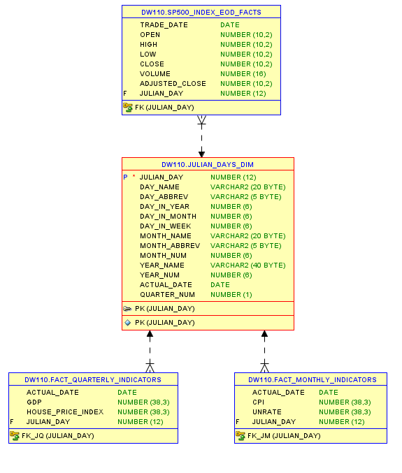Star Schema Design: Centralized JULIAN_DAYS time dimension connecting multiple fact tables:
Daily Stock Market Data (S&P 500 metrics)
Quarterly Economic Metrics (GDP, housing prices)
Monthly Indicators (CPI, unemployment rates)
OLAP Implementation:
Analytical operations (slice, dice, drill-down, roll-up).
Query optimization with CTEs and temporary tables.
Visualization and Storytelling:
Explores market volatility, cross-metric relationships, day-of-week trading patterns, and seasonal housing trends.
Key visuals like correlations between GDP, S&P 500, and housing market dynamics.
2. Data Transformation: AWS Glue
The transformation process is implemented in the spark_transformation.py script using PySpark with Glue Context. Spark is a suitable choice for this transformation process due to its ability to handle large-scale data efficiently and perform distributed computing, which makes it ideal for processing and transforming extensive JSON data structures.
Steps Performed:
Analysis of Data Relationships and Trends
This section provides some analytical queries along with outputs which have been truncated in some cases (due to volume of data). These queries will show the relations and trends between various economic indicators and the financial data. Later these have been used for visualizations.
Analytical Queries:
Analysis 1: Market Volatility Study
This analysis provides a foundation for understanding market behavior during different economic conditions, which is crucial for risk assessment and investment strategy development.
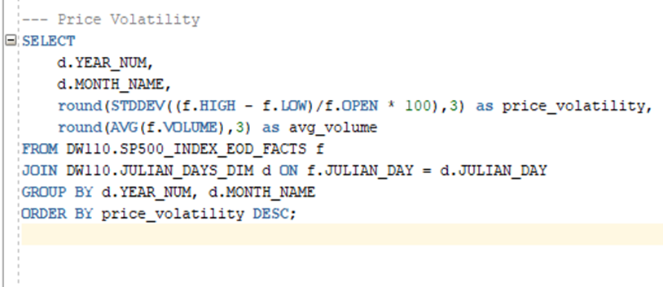 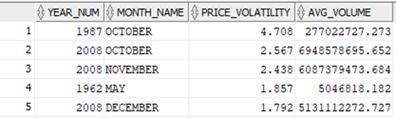Analysis 2: Cross-Metric Economic Overview
This comprehensive view helps understand how different economic metrics interact during various phases of the economic cycle, particularly useful for both historical analysis and future pattern recognition.
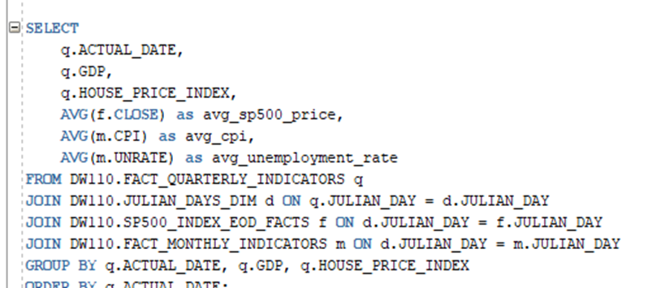 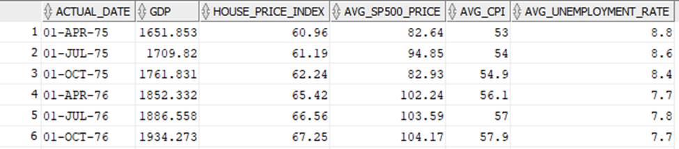Analysis 3: Day-of-Week Trading Patterns
Analysis 4: Quarterly Growth Comparison (S&P 500 vs GDP)
Analysis 5: S&P 500 and GDP Correlation Study
This analysis provides statistical validation of the relationship between economic growth and market performance, supporting evidence-based decision making in investment and policy contexts.
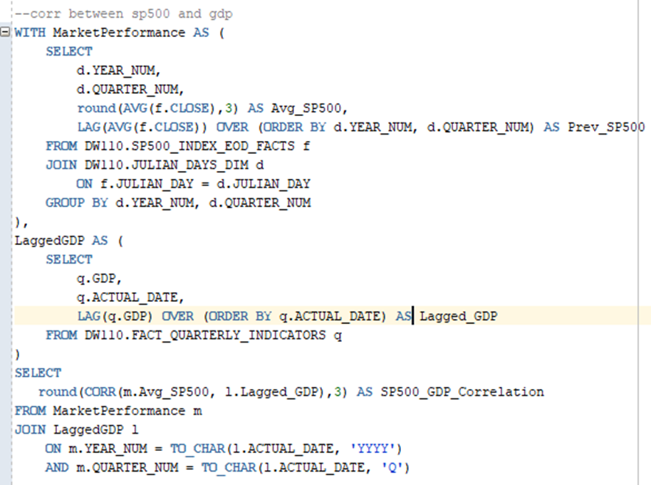 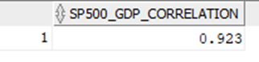Key Finding: Strong Positive Correlation: 0.923
o Indicates very strong relationship between market performance and GDP
o Correlation coefficient close to 1 shows nearly linear relationship
o Suggests market largely moves in tandem with economic growth
Analysis 6: S&P 500 and Housing Price Index Correlation Study
This analysis shows how two major asset classes (stocks and real estate) move together, which is crucial for investment strategy and economic policy considerations.
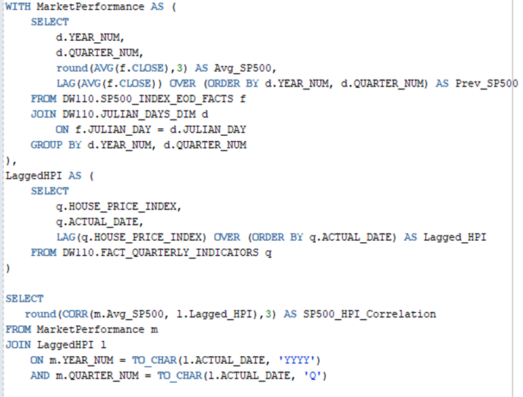 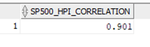Key Finding: Strong Positive Correlation: 0.901
o Very strong relationship between stock and housing markets
o Slightly lower than GDP correlation (0.923)
o Indicates strong wealth effect between markets
Analysis 7: Housing Market Annual Growth Trends
Analysis 8: Quarterly Housing Market Patterns
This analysis helps market participants understand and anticipate regular seasonal patterns in the housing market, useful for both timing decisions and price expectations.
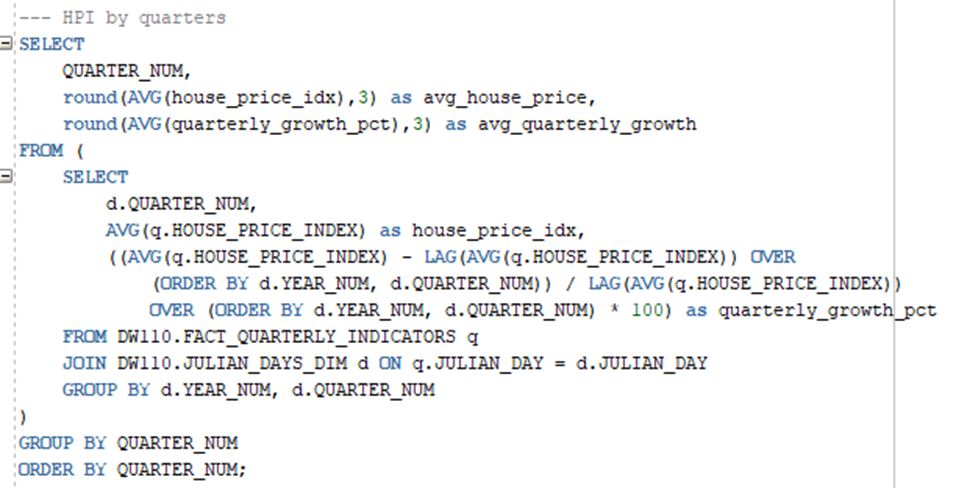 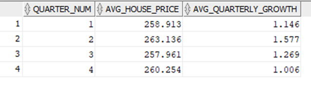Key Insights: Seasonal Pattern Identified
Strongest growth in Q2 (Spring season)
Weakest growth in Q4 (Winter season)
Spring prices typically highest
More moderate activity in Q3 and Q1
Data Visualization and Storytelling
1. The Three Acts of America's Economic Story (1978-2013)

This visualization presents a synchronized view of four key economic indicators - GDP, Unemployment Rate, Housing Prices, and S&P 500 Adjusted Closing Price. The data naturally divides into three distinct periods, color-coded for clarity
The parallel arrangement of these metrics reveals how they interact during different economic cycles, clearly showing the transition from stability to boom and subsequent correction. There is a powerful illustration of the 2008 financial crisis impact.
2. Market Returns vs Economic Growth: A Tale of Volatility and Recovery (1974-2012)
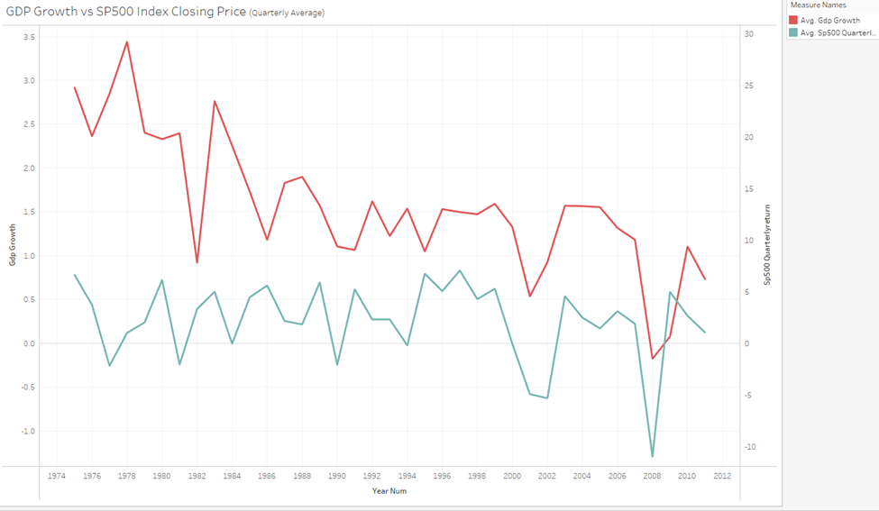This dual-axis time series visualization compares quarterly GDP growth (red line) with quarterly S&P 500 returns (blue line), revealing several key insights
The visualization effectively shows how market returns can be more volatile than underlying economic growth, with the S&P 500 often experiencing more extreme movements than GDP, particularly during economic stress periods.
3. Parallel Paths: The Long-Term Dance of Markets and Economic Growth (1974-2012)
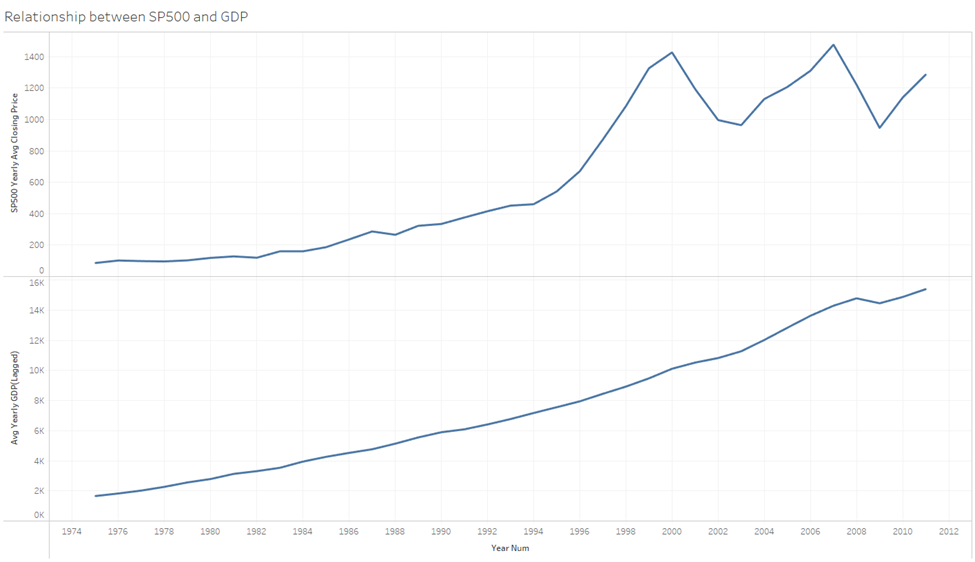This stacked visualization powerfully illustrates the relationship between S&P 500 prices (top) and GDP (bottom) over four decades
These visuals complement the previous growth rate comparison by showing absolute values, reinforcing our correlation findings (0.923) and highlighting how market values can swing dramatically even as GDP maintains steady growth.
4. Twin Bubbles: Housing and Stock Market Trajectories (1975-2011)
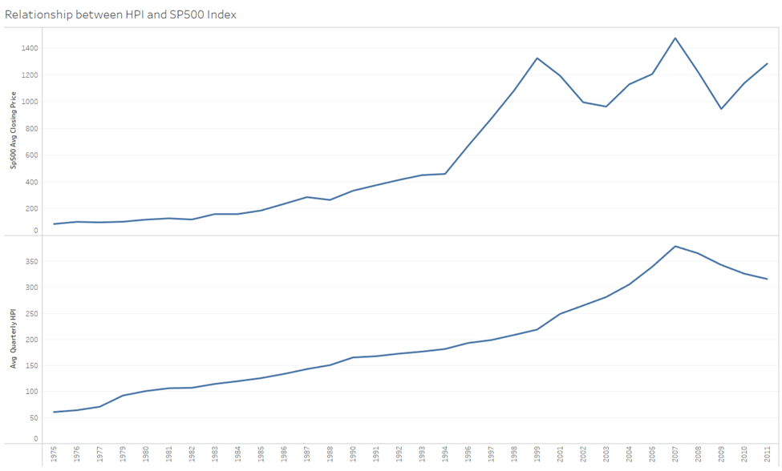This parallel visualization reveals the intricate relationship between the S&P 500 and Housing Price Index (HPI), highlighting several critical periods
The visualization supports our high correlation finding (0.901) while revealing how both markets experienced similar boom-bust cycles, though with different recovery patterns. Housing prices show more "stickiness" during downturns compared to the more volatile stock market.
5. Housing Market Growth vs S&P 500: A Tale of Two Metrics (1974-2012)
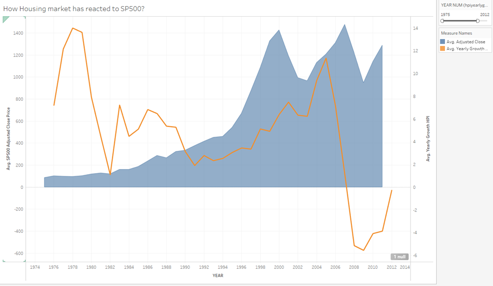This visualization effectively shows how housing growth rates don't always mirror stock market performance, with housing showing more extreme reactions during crisis periods despite the overall high correlation (0.901) between the two markets.
Conclusion
This project demonstrates the power of proper data warehousing and analytical techniques in understanding complex economic relationships, providing valuable insights for both investment decisions and policy considerations.
Tools Used:
Oracle Sql Developer
Tableau
This site was created with the Nicepage